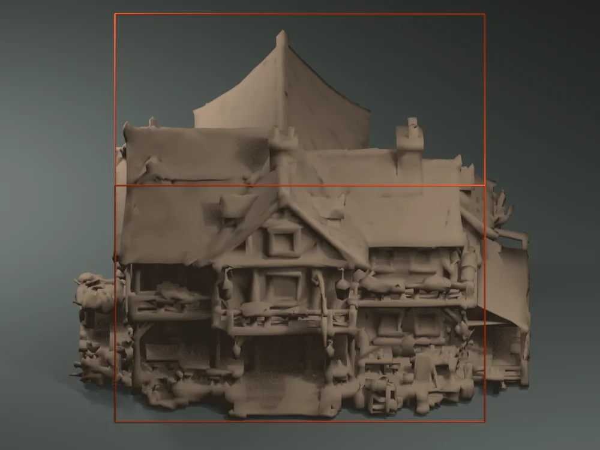

Rising Ashes · collider orientation review
Check the doorway side before authoring a building collider
Choose a hero building and inspect all four asset-local facades. The orange wireframe is the current fitted collider from SettlementBuilder: 80% of the model’s horizontal bounds and its full height.
Building
Asset-local side

Fitted mesh
Current collider footprint
Collider height
Review cue: look for ground-level entrances, porches, counter access, open arches, and solid wall corners relative to the orange box. These are model views at lot yaw 0; the game rotates the collider with its lot. A visible opening does not prove that an interior is supported, and this offline preview does not prove a runtime player collision. Verify each proposed opening from both sides in the running settlement.